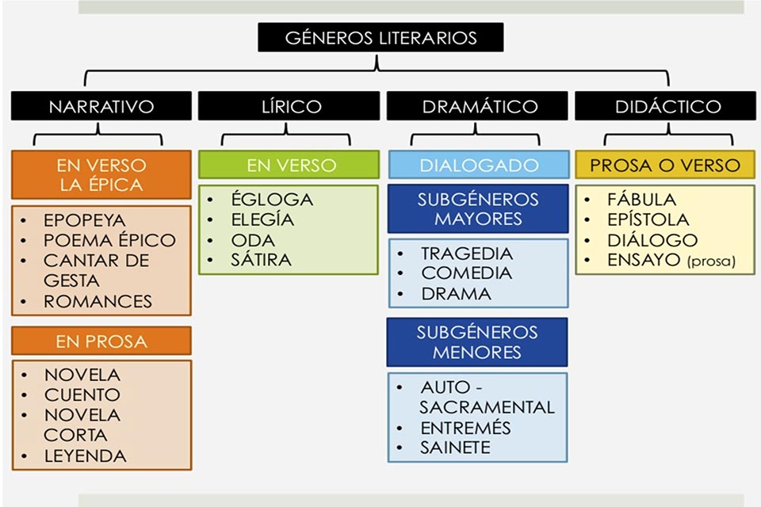

Tabla de Géneros Literarios
Géneros literarios
Narrativo
Lirico
Dramatico
Didactico
En verso.La épica
En Prosa
En verso
Dialogado
Prosa o Verso
Subgénero mayor
Subgénero menor
Epopeya
Poema Épico
Cantar de Gesta
Romances
Novela
Cuento
Novela Corta
Leyenda
Égloga
Elegía
Oda
Sátira
Tragedia
Comedia
Drama
Auto-Sacramental
Entremés
Sainete
Fábula
Epístola
Diálogo
Ensayo(prosa)
Narrativo
En Verso. La épica
Epopeya
Poema Épico
Cantar de Gesta
Romances
En Prosa
Novela
Cuento
Novela Corta
Leyenda
Lírico
En Verso
Égloga
Elegía
Oda
Sátira
Dramático
Dialogtado
Subgéneros Mayores
Tragedia
Comedia
Drama
Subgéneros Menores
Auto-Sacramental
Entremés
Sainete
Didáctico
Prosa o Verso
Fábula
Epístola
Diálogo
Ensayo (prosa)
Contacto
Volver al Home...